It stays on your computer
Manuscripts, takes, exports and your library are files on your own disk. The account system knows your email address and your plan, nothing about your book.
Audiobook production studio · Windows 10 & 11
StellAurator is an audiobook production studio for authors, narrators and producers. Read every part yourself, in whatever voice you happen to have. It converts each line into the voice of the character speaking it, and keeps your timing, your emphasis and your pauses exactly as you performed them.
No credit card required. Nothing is charged when the trial ends, and your work stays yours.
Hear it
Each pair is the same take: first as it was performed, then as the character it was cast to. The timing, the emphasis and the pauses are the performer’s own.
The studio
Reorder and retime the lines, level the audio, lay music and ambience under the scene, and export a finished performance rather than a read-aloud.
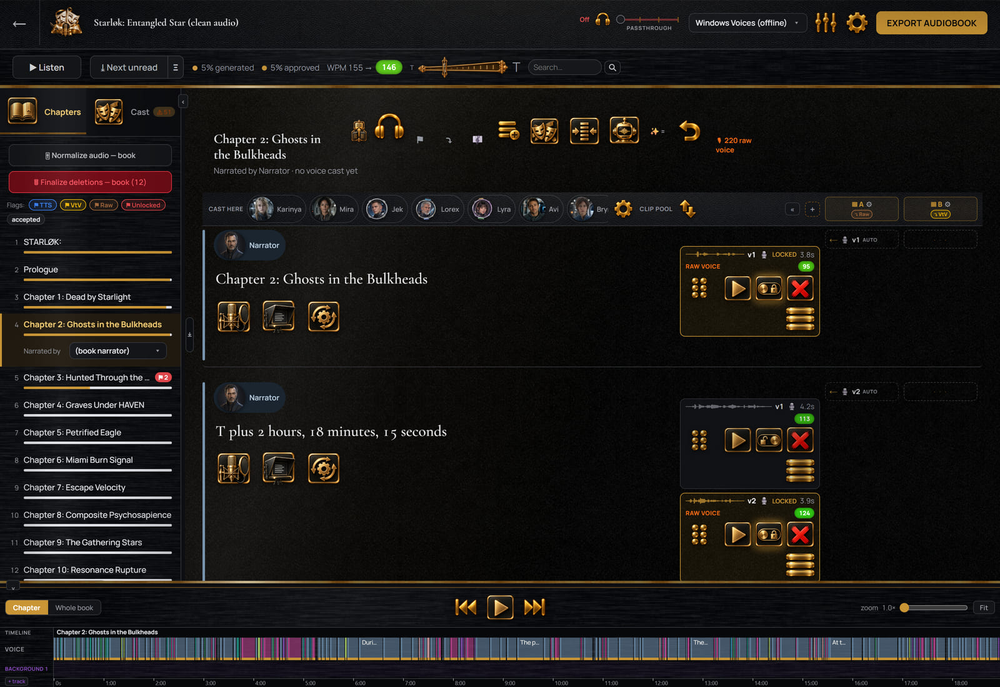
The workflow
Stop at any step and come back later. Editing is non-destructive: every take you generate or record is kept until you delete it.
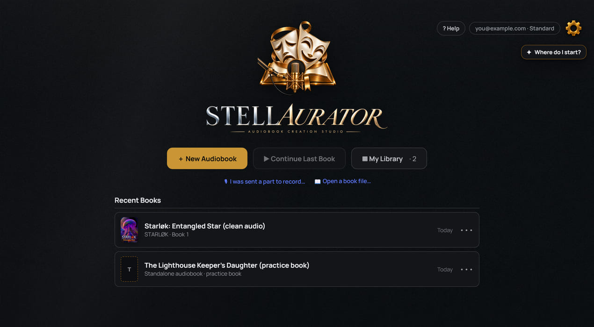
Your manuscript
StellAurator is a desktop studio, not a website you upload a book to. Your projects live on your own computer, and we never receive your manuscript or your recordings.
Manuscripts, takes, exports and your library are files on your own disk. The account system knows your email address and your plan, nothing about your book.
Keys for the voice and AI services you choose to connect are stored on your machine. Text goes only to the services you connect, under your own account with them.
When a trial or a plan ends the studio becomes read-only: every book still opens and plays, and nothing is deleted. If you have ever paid, export stays unlocked for the work you made.
Inside the studio
Cast the book
The cast panel lists every speaker the importer found. Each one gets a color, a voice from whichever provider you have connected, and a face from a pool of 445 portraits.
Open Character Tags: click a character then click a portrait, drag one onto a slot, or let Best fit auto assign do the whole cast at once. Anyone still uncast is flagged, so you know what is left before you generate anything.
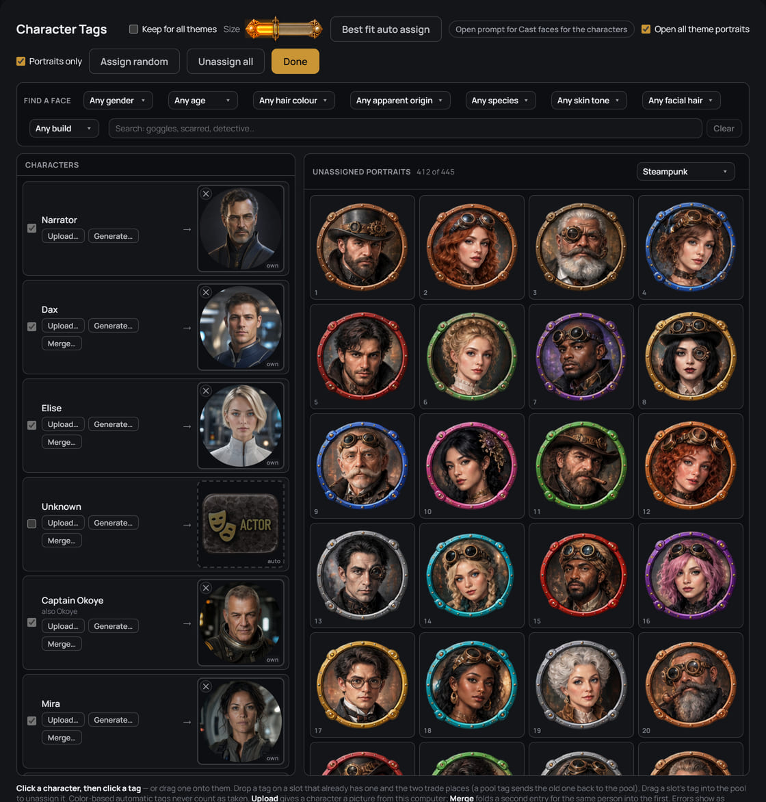
Perform every character
Your voice does not have to sound like the character, and it does not have to sound like more than one person. Open the teleprompter and act the scene out, every part, back to back. The current line sits in a focus band; the rest of the chapter fades above and below it, at a pace you set.
Then run the actor pass: speech-to-speech conversion. Every line comes back in the voice of the character who was speaking it, with your timing, your emphasis and your pauses.
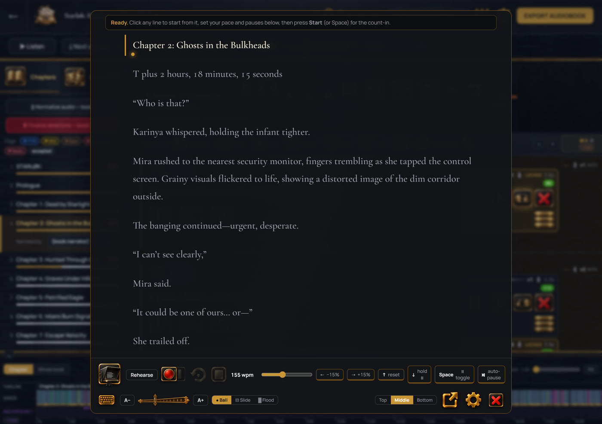
A chapter you recorded somewhere else becomes a chapter of takes here. Drop the file in, say which chapter it is, and the studio cuts it into your lines — on the pauses, which is free and stays on your computer, or on the words, with a transcription service you connect.
Your file is never changed and never re-mastered; the studio only divides it. Where the recording and the manuscript disagree, you choose, line by line.
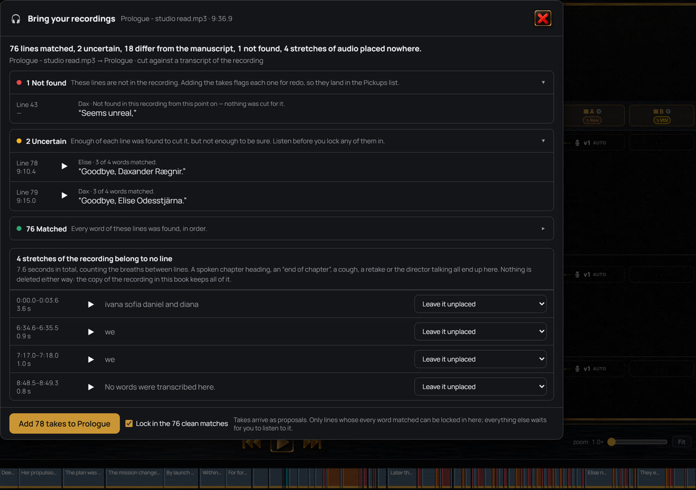
Direct and edit every take
Each line has a clip pool. Generate a take, record another, convert a third: every one stays in the pool with its waveform and length, and you lock in the one you want.
Version columns A and B let you build two complete renditions of the same book at once and export either one, so you can try a different narrator without losing the first pass.
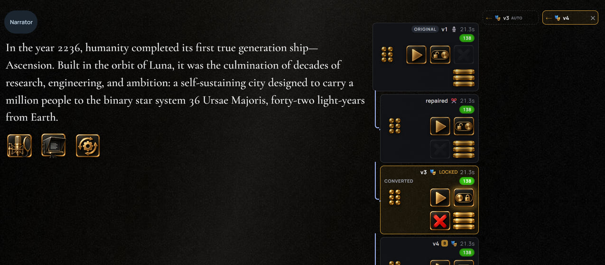
Master and export
Every recording is cleaned up on its way in. Low rumble is removed, harsh S sounds are softened, and loudness is evened out. Three sliders warm, sharpen or brighten the tone. Auto-level normalizes every take to the same peak level without changing how you said it.
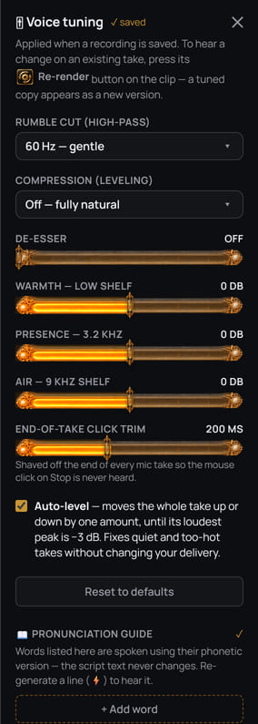
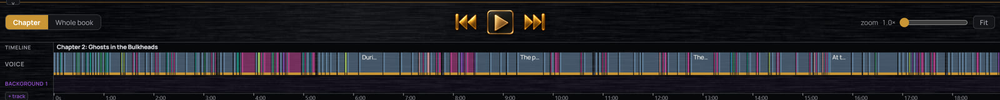
Auto Score reads each chapter and finds the beats: where a scene turns, where the tension peaks, where music belongs. For each one it writes a cue, with a mood and one sentence saying why, and ties the cue to the words it belongs to, so it stays in the right place when you edit the chapter.
Lay your own music and sound effects under the lines: a bed runs under a scene, a sting or an effect sits between two lines, and every cue is a marker on the timeline. Print the cue sheet for a composer.
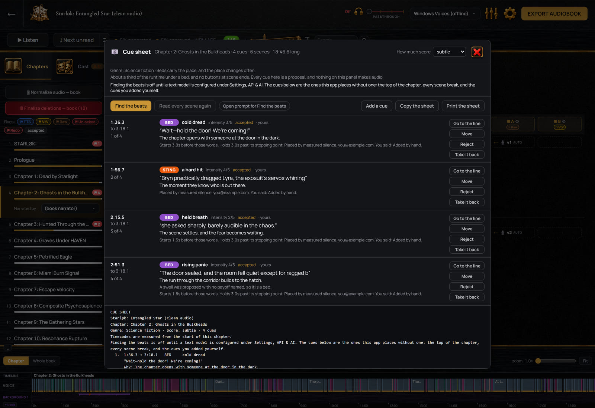
Export ACX-standard chapter MP3s, a single chaptered M4B with cover art, or both in one run. You choose which takes are used: your locked-in selections, the alternates, or an entire version column.
The gaps between lines are measured and corrected on the way out. Silence is cut or extended so that the pause after a sentence, after a paragraph and after a section break is exactly the length you set.
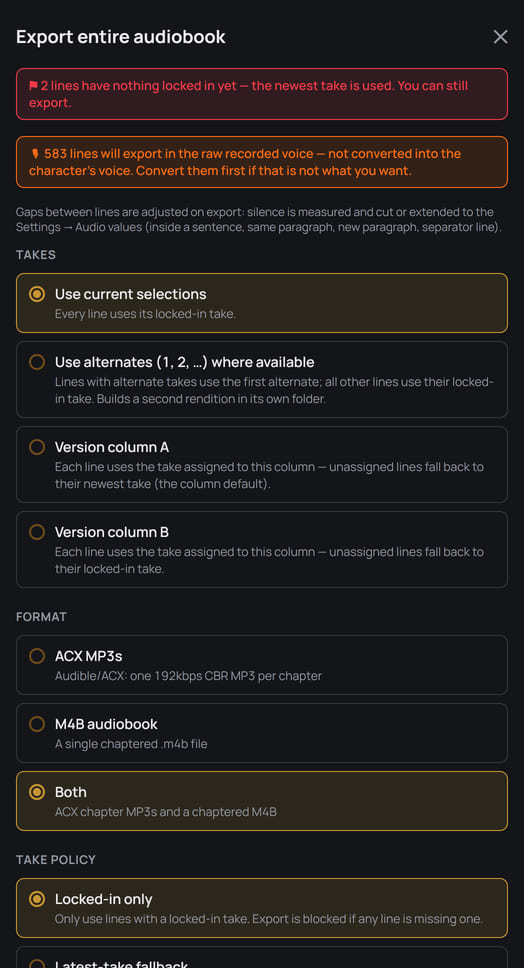
ACX does not accept text-to-speech narration. A performance you recorded yourself and converted with speech-to-speech is still your performance, and StellAurator keeps the original recording alongside every converted take.
Every exported file that holds generated narration is marked as AI-generated, and the export dialog says how many of the lines about to go out are generated before you export.
Check every chapter before delivery
Proof listen plays one chapter of one version exactly as the export will write it, and each line you hear gets a tick.
When every line has been heard, Sign off chapter appears. Change a line afterward and only that line goes stale, so you always know what still needs a listen.
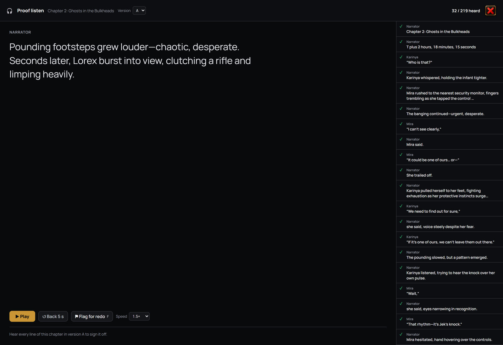
One button on every line, or the F key while anything is playing, marks a take as a pickup without stopping playback.
Everything flagged lands in Pickups. From there: regenerate them, record them, or send them to the actor who read them.
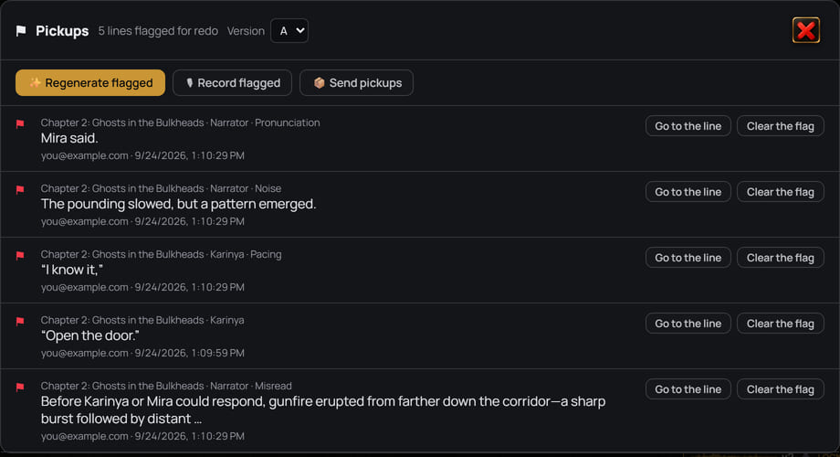
Your work stays on your own computers
Sign in on a second computer and the first one asks whether to let it receive your books. Say yes and the two recognize each other from then on; there is no code to type.
Send a book straight to another of your computers and it arrives in that library, or keep a linked book in step across them. While your main computer is on, open its library from the other one and browse, listen and read your notes.
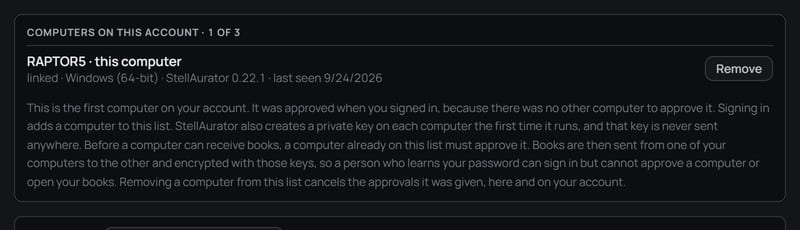
Voices
They ship with the studio and need no account and no internet connection, and the Windows system voices are there too. These are text-to-speech: they read a line for you.
Turning your own performance into a character’s voice needs a provider that does voice conversion : the services marked below, or a voice-conversion model running on your own computer. You supply the account and the service bills you directly. You do not need one to start.
Get an ElevenLabs account if you want its voices. StellAurator is an independent affiliate of ElevenLabs and is paid a commission if you subscribe after following this link. You can also go to elevenlabs.io directly.
Olivia, Emma, Ava, Amelia, Charlotte, Mia, Sophia, Evelyn, Isabella and Harper. Noah, Oliver, Theodore, James, Henry, Liam, William, Elijah, Lucas and Mateo. Luna, Jazzy, Raven, Willow, Juniper and Phoenix.
The keys for those services stay on your computer. A paid voice service bills you directly; what you use there is separate from your StellAurator subscription.
Connect Anthropic, OpenAI, xAI, Gemini, Groq, OpenRouter, Ollama, or another service that works the same way. The model matches dialogue to speakers, describes the cast, briefs a narrator or a portrait, and finds where music belongs. Every one of those instructions is open for you to read and change. Entirely optional.
Themes
Each theme replaces the icons, panel textures, buttons, sliders, cast tags and portrait art across every screen. Switching themes changes the whole look, not just the colors.
Twelve themes ship today, all included. More are on the way.
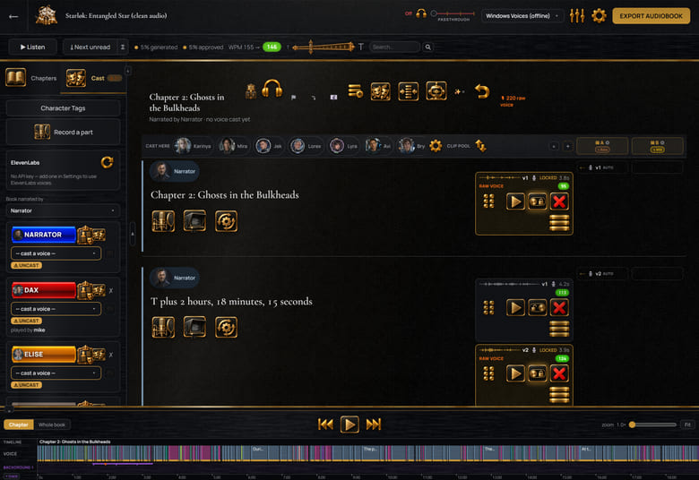
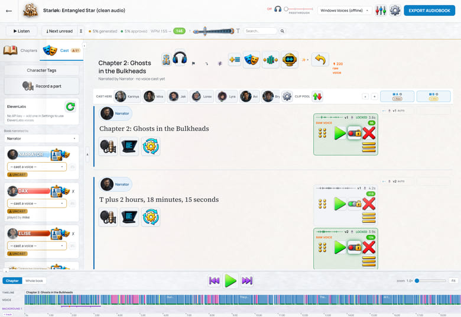
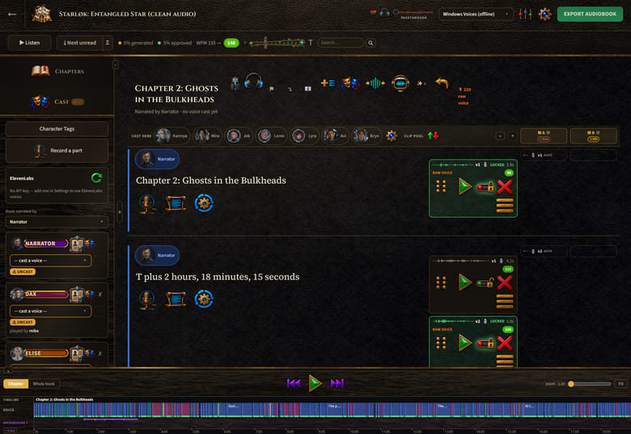
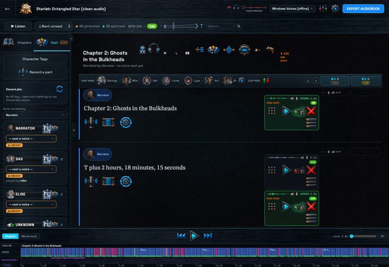
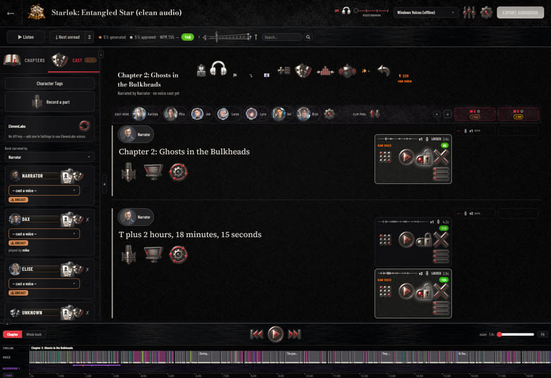
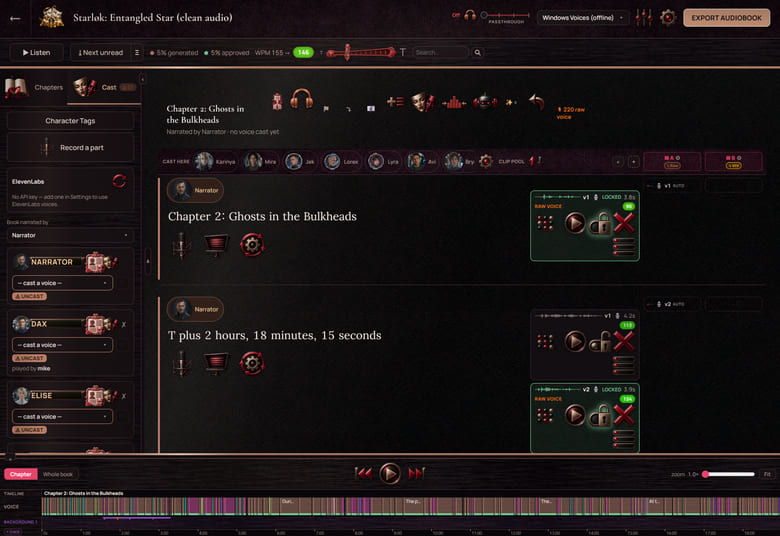
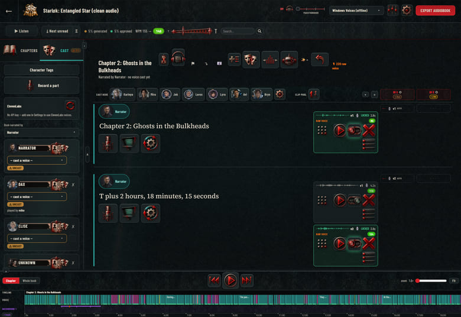
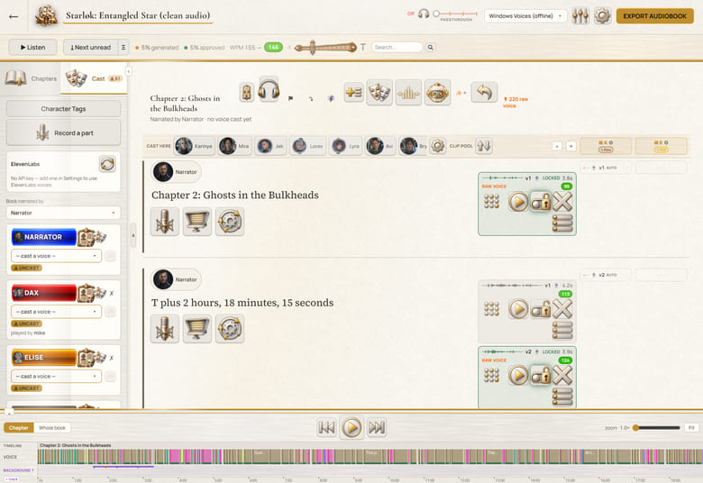
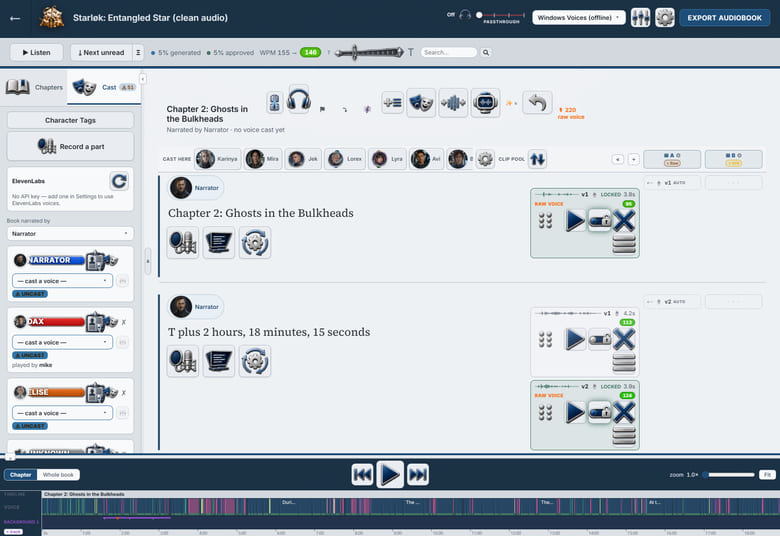
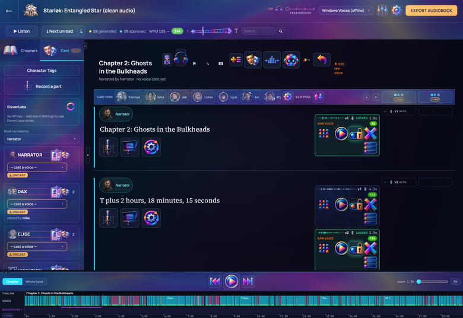
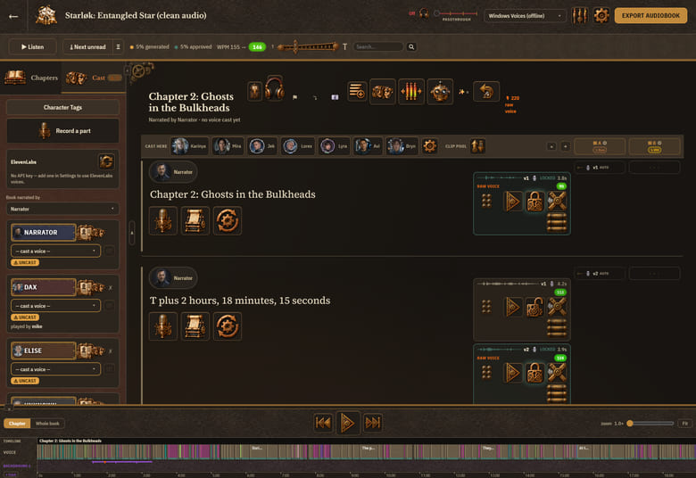
Add-on
Our cloud storage option — carries your books between your computers. Put a book in Nebula from any of your linked computers and take it down on another, whether or not the first one is on.
What you put in Nebula is sealed before it leaves your computer, with keys that exist only on your linked computers. We cannot open it, then or later. It is not a backup: the master copy of your work stays on your own disk.
Nebula 25 at $7 a month, Nebula 100 at $13, Nebula 500 at $21, or yearly at half price. An add-on to a paid plan, canceled on its own. When Nebula ends you have 60 days to take your books down.
Share a single book or a single file by a link that carries its own key. Whoever holds it can download that one thing and nothing else, until it expires, reaches the download count you set, or you stop it.
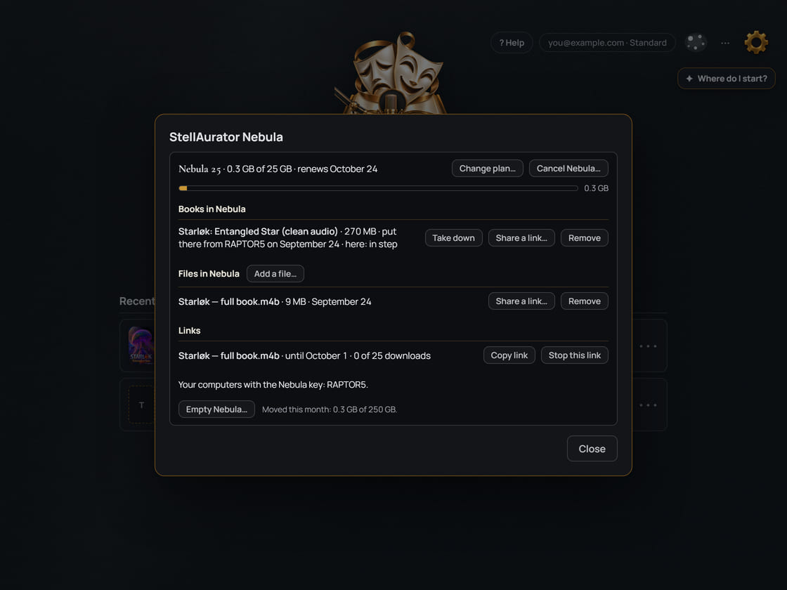
Pricing
Try everything for seven days with no card. Then $29 a month, or $290 a year with two months free. One plan, every feature, three of your computers.
No card. Nothing is charged when it ends.
Cancel anytime, in two clicks.
Two months free.
Your work remains yours. Cancel whenever you want: your projects and recordings stay on your computer, and StellAurator never uploads your manuscript to us.
Questions
No. StellAurator is a recording studio. Voice generation and speech-to-speech conversion are optional, and twenty-six voices come with it and work offline. A paid voice service is needed only for that service’s own voices or for converting your performance into a character’s voice, and it bills you directly. Get an ElevenLabs account if you want one. StellAurator is an independent affiliate of ElevenLabs and is paid a commission if you subscribe after following this link. You can also go to elevenlabs.io directly.
Nothing is charged: we never asked for a card. The studio becomes read-only. Every book still opens and plays and your recordings are still there. Subscribe when you want to carry on recording, editing and exporting.
No. Your projects, recordings and exports are files on your own computer and nothing is ever deleted. If you have ever paid for a plan, export stays unlocked for the work you made.
Anytime, in two clicks on your account page. Your plan stays active to the end of the current billing period.
Yes. What you make is yours, and the export is industry standard: ACX chapter MP3s and a chaptered M4B. You are responsible for the rights to your text and to any real person’s voice you clone. Exports that contain generated narration are marked as AI-generated in the file, and ACX does not accept text-to-speech narration.
No. It stays on your computer. Text is sent only to the voice and AI services you choose to connect, under your own account with them.
Three, for one person. The app lists them under Settings, Account, and you can remove one to make room for another. Link them and you can send a book from one to another, keep a book in step, and open your main computer’s library from the second one while the first is on.
Yes. Windows shows the publisher when you run it.
Yes: 64-bit Windows 10 or 11.
No card required. A practice book comes with the studio and takes you through casting, performing, clean-up and export.
The installer is signed, so Windows shows the publisher when you run it. 64-bit Windows 10 or 11.